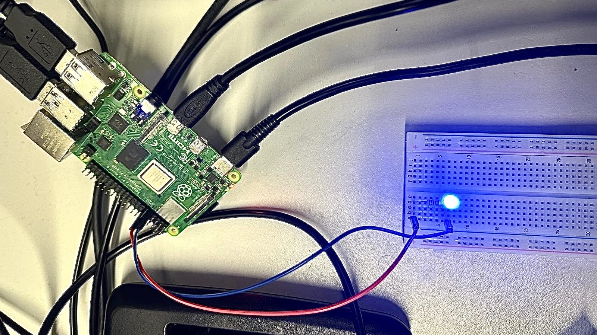
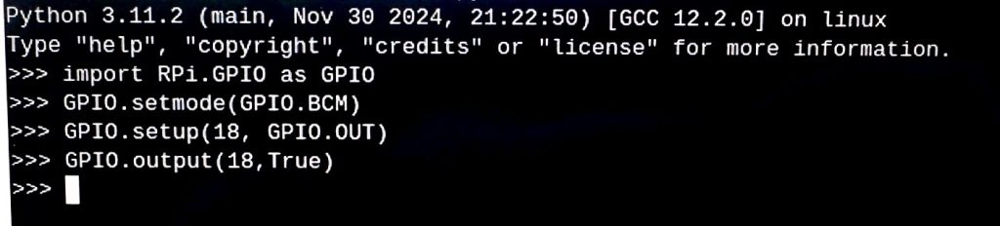
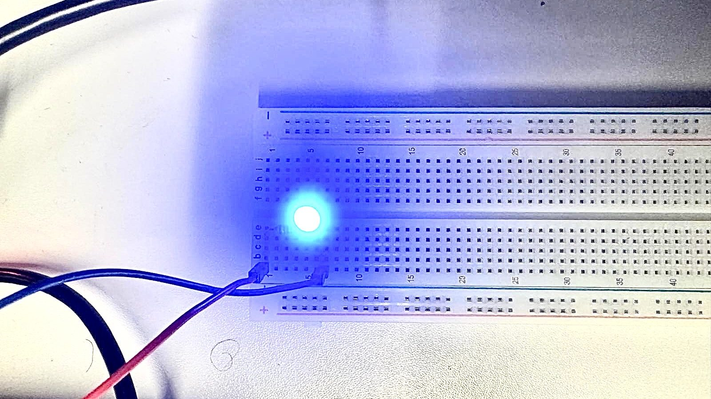

This week, I followed the tutorial titled “Lighting Up an LED” on the Raspberry Pi project website and did some practice. I used a Raspberry Pi, a breadboard, a resistor, and an LED to complete a basic physical computing task – turning on an LED light through Python code.
The code I wrote in the Python shell was:

This code imports the GPIO library, sets the pin numbering mode to BCM, configures GPIO pin 18 as an output pin, and then sends a True signal to pin 18, which switches the LED on.

What I Learned
- RPi.GPIO library: I learned how to use the RPi.GPIO library to control hardware components through the Raspberry Pi’s GPIO pins.
- Pin setup: I now understand the importance of setting the GPIO mode (BCM or BOARD) before configuring pins, and how to correctly set a pin as an output.
- Basic circuit building: I gained confidence connecting simple circuits involving LEDs and resistors.
- Hardware-software interaction: This small project showed me how code can directly control physical hardware, which feels different from purely screen-based programming.
Reflection
Although this is a very simple small project, I was still extremely excited to see that my code could make a physical object respond. This made me realize that there is actually a very close connection between programming and electronic hardware, especially in the fields of physical computing and the Internet of Things. In the future, I want to further try to make the LED blink, or use different pins to control multiple LED lights.
Tutorial
Raspberry Pi Foundation. (n.d.). Lighting an LED. Available at: https://projects.raspberrypi.org/en/projects/physical-computing/2 (Accessed: 6 February 2025)